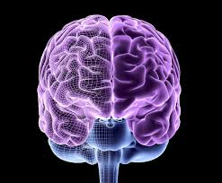

Bilateral Symmetry
Present in my previous post, I was hesitant at first to accept the study of the evolution of the human brain as a reasonable benchmark for artificial intelligence.
I was confused how neurons was going to lead to a significant breakthrough with AI or how processes from organisms with very simplistic structures could offer insight on the intelligence relevant to the topic. Yet it was this chapter where Bennett did prove me wrong and showed the benefit to taking the “long road” in understanding the development of AI.
For instance, I wasn’t aware of radially symmetric or bilaterally symmetric body plans. I was surpised to learn that radially symmetric organisms (like jelly fish are severely at a disadvantage when it comes to hunting. They would need mechanisms to sense and move in all different directions simultaneously. Yet bilatrial organisms simplified motor functions by only needing a way to go forward and a way to turn. For these creatures, it was only a matter of choosing to adjust to the right and left.
This body plan is so efficient that even our innovations today such as planes and cars follow this format. Paired with the fact that these are the only animals with brains, it led to an important breakthrough known as steering. to become more complex and we can’t rely on “norms” to help answer where it’s common sense or not.
But before we do that, let’s first ask if AI thinks common sense is unqiue to humans or can it be seen in other organisms?
Nematodes
Bennett focuses on the nematode, a worm like creature with only a few hundred neurons that likey emerged ~600 million years ago and how it serves as a great outlook to what the first bilaterians did with their brains. He notes an experiment of putting a nematode on oneside of a petri dish and food on the other, and what you’ll find is that the nematode will always find the food despite being blind.
They did this following two rules: (1) If food smells increase, keep going and (2) If food smells decrease, turn. This was the action of steering. Navigating without the need for a map, logic, reason, understanding of dimensions but purely through the brains steering via smells. Not just for food either but it also had senses for temperature, light, and touch. Single-celled organisms also have a process where it detected stimulus which triggered chemical processes to chain the cell’s propellors. But, it was the first instance of the first brain that involved steering on the scale of multiceulluar organisms where circuits of neurons came into play.
Connection to machines
But how does all this connect to AI? That was the question I had as I was learning about steering. Machine’s dont worry about their survival and don’t have to take care of their own health. So how could steering possibly have a connection? But, I was given the most obvious and perfect example.
Before getting to that, the book mentioned in the 80s and 90s there were two opposing beliefs in the AI community which provides context. First, there was the symbolic AI camp that focused on engineers trying to take human intelligence, compartmentalize, and give AI system skills like reasoning, language, problem solving, and logic. The other stance was the behavioral AI camp led by roboticists Rodney Brooks who argued for studying simpler level intelligences as things like sense and response took much more time to develop than the logic skills that followed.
Bennett uses a metaphor of researchers studying flight in the 1890s travelling to the future where they spent all their time inspecting a Boeing 747. Going back to their time, they all this knowledge but lack the principles of how it flight technology got there. In other words, you can’t skip steps or you will miss the foundational knowledge.
The Roomba
That is when Bennnett mentioned how Brooks built the Roomba who had simple sensors, bilateral symmetry, and moved around by steering away from obstacles when it hit them and towards the charging station when it was low.
I found it funny how when people think of robots they do tend to think of something that looks almost humanoid and that is certainly the first image that pops into my mind. Yet, just like the first bilaterians, one of the most successful and early incorporations of machines relied on that same steering strategy.
Valence, Trade-offs, Internal Status
The last part of the chapter was what really opened my eyes.
I liked how Bennett talked about valence which is the categorization of stimuli as either good or bad. Not morally or even considering the features of an object, but good or bad related to survival. For instance, food smell is a positive valence that will illicit forward movement while something like extreme temperatures will illicit muslcves for turning.
Trade-offs were also mentioned, and how decisions whether to pursue food in the presence of danger is decided by the brain. Neurons can react one way that cancel eachother out, but the brain makes the single decision which mimics inhibitory neurons in organisms like coral to remediate opposing actions.
And lastly, states like hunger, too cold, too hot, provides signals that diffuse throughout the body which inform sensory neurons how to respond accordingly. The best part is, the Roomba, when fully charged will ignore the signal coming from the charging station but when it is low, like bilaterial beings, will respond according to that status change.
Conclussion
In short, my opinion of this book has changed now that I understand the overlap between these breakthroughs and the breakthroughs in AI. I look forward to seeing more of what this book has to offer.